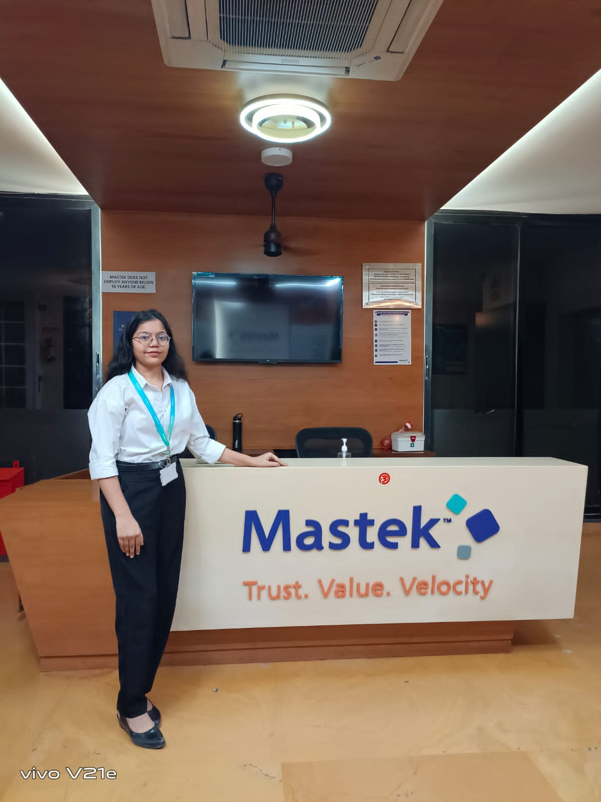

Internship Experience

Company Name: Mastek
Internship Duration: Jan 2024 – April 2024
Role: Application Development Intern
Location: Ahmedabad, India
Directed a collaborative effort with five team members to create a web application, employing advanced Java, HTML, CSS, JavaScript, SQL, PL/SQL, Servlet and JSP techniques, resulting in a 30% increase in project efficiency and 15% faster data retrieval. Developed and maintained detailed documentation, which facilitated a 10% reduction in future update and maintenance time. This experience showcases my leadership, technical expertise, and commitment to delivering high-quality software solutions.
technologies and Framwork Used